caso comercial del autor
jo-loves-2019-910873603
J1/J2 · Bolsa 17–29 s; filtros 35–48 s. La composición exterior es presentación del estudio, no UI que Monetta deba imitar.
 Clip examinado: 48.96 s. Fotogramas muestreados, no medición de rendimiento.
Clip examinado: 48.96 s. Fotogramas muestreados, no medición de rendimiento.caso comercial del autor
paul-smith-1181182346
P1 · Fotografías, variantes y ampliación de detalle. Observar 4–9 s y tramo final.
 Clip examinado: 12.15 s. Fotogramas muestreados, no medición de rendimiento.
Clip examinado: 12.15 s. Fotogramas muestreados, no medición de rendimiento.caso comercial del autor
paul-smith-1181192926
P2 · Ficha móvil y controles de selección; distinguir scroll del montaje y efectos de la interfaz.
 Clip examinado: 9.77 s. Fotogramas muestreados, no medición de rendimiento.
Clip examinado: 9.77 s. Fotogramas muestreados, no medición de rendimiento.caso comercial del autor
jo-loves-2019-910873683
J4 · Menú lateral conservando parte del contexto.
 Clip examinado: 15.68 s. Fotogramas muestreados, no medición de rendimiento.
Clip examinado: 15.68 s. Fotogramas muestreados, no medición de rendimiento.caso comercial del autor
jo-loves-2019-910873554
J3 · Ficha y fotografía editorial. No prueba latencia de servidor ni selección de variante.
 Clip examinado: 16.33 s. Fotogramas muestreados, no medición de rendimiento.
Clip examinado: 16.33 s. Fotogramas muestreados, no medición de rendimiento.caso comercial del autor
jo-loves-2019-910873713
J5 · Imágenes de ingredientes sobre la lista. Descartado para el catálogo de Monetta.
 Clip examinado: 4.30 s. Fotogramas muestreados, no medición de rendimiento.
Clip examinado: 4.30 s. Fotogramas muestreados, no medición de rendimiento.demo técnica
react-path-drawing
Dibujo progresivo de trazos. Referencia técnica para logo B, no un ejemplo de lettering terminado.
 Clip examinado: 2.77 s. Fotogramas muestreados, no medición de rendimiento.
Clip examinado: 2.77 s. Fotogramas muestreados, no medición de rendimiento.demo técnica
svelte-press
Contracción y recuperación. Reducir mucho la amplitud para Monetta.
 Clip examinado: 1.48 s. Fotogramas muestreados, no medición de rendimiento.
Clip examinado: 1.48 s. Fotogramas muestreados, no medición de rendimiento.demo técnica
vue-copy-button
Confirmación local. Alternativa a toast o diálogo para una acción pequeña.
 Clip examinado: 1.12 s. Fotogramas muestreados, no medición de rendimiento.
Clip examinado: 1.12 s. Fotogramas muestreados, no medición de rendimiento.demo técnica
vue-carousel-thumbnail-gallery
Galería y miniaturas coordinadas; usar gesto deliberado.
 Clip examinado: 1.72 s. Fotogramas muestreados, no medición de rendimiento.
Clip examinado: 1.72 s. Fotogramas muestreados, no medición de rendimiento.demo técnica
vue-carousel-lightbox
Fotografía ampliada y retorno a galería.
 Clip examinado: 1.20 s. Fotogramas muestreados, no medición de rendimiento.
Clip examinado: 1.20 s. Fotogramas muestreados, no medición de rendimiento.demo técnica
react-base-checkbox
Trazo de selección localizado; check estático como comparación.
 Clip examinado: 0.52 s. Fotogramas muestreados, no medición de rendimiento.
Clip examinado: 0.52 s. Fotogramas muestreados, no medición de rendimiento.demo técnica
vue-smooth-tabs
Indicador activo. No copiar blur y desplazamiento del cuerpo.
 Clip examinado: 2.17 s. Fotogramas muestreados, no medición de rendimiento.
Clip examinado: 2.17 s. Fotogramas muestreados, no medición de rendimiento.demo técnica
vue-radix-accordion
Apertura/cierre. No ocultar información crítica ni animar párrafos largos.
 Clip examinado: 1.72 s. Fotogramas muestreados, no medición de rendimiento.
Clip examinado: 1.72 s. Fotogramas muestreados, no medición de rendimiento.demo técnica
vue-multi-state-badge
Processing, Done y error. Adoptar estados; evitar anchura variable que desplace controles.
 Clip examinado: 1.97 s. Fotogramas muestreados, no medición de rendimiento.
Clip examinado: 1.97 s. Fotogramas muestreados, no medición de rendimiento.demo técnica
vue-swipe-actions
Acciones reveladas por deslizamiento. Descartado inicialmente por descubribilidad.
 Clip examinado: 3.57 s. Fotogramas muestreados, no medición de rendimiento.
Clip examinado: 3.57 s. Fotogramas muestreados, no medición de rendimiento.demo técnica
js-add-to-basket
Vuelo, impacto y halo: descartados. El clip corto muestra principalmente recuperación; abrir demo para la secuencia completa.
 Clip examinado: 1.40 s. Fotogramas muestreados, no medición de rendimiento.
Clip examinado: 1.40 s. Fotogramas muestreados, no medición de rendimiento.demo técnica
vue-split-text
Texto revelado escalonadamente. Adaptación a letras del logo; descartado para textos esenciales.
 Clip examinado: 2.43 s. Fotogramas muestreados, no medición de rendimiento.
Clip examinado: 2.43 s. Fotogramas muestreados, no medición de rendimiento.28 octubre 2026
Grabaciones de apps comerciales
FARFETCH, Moda Operandi, Zara, HBX, Lyst, ASOS, Zalando y Shop. Resultados y consecuencias en REFERENCIAS_COMERCIALES.md.
grabación de app comercial · #09
farfetch-arranque
Monograma FF estático de 0 a 3,6 s y corte a la bienvenida (3,8 s). Sin animación de logo.
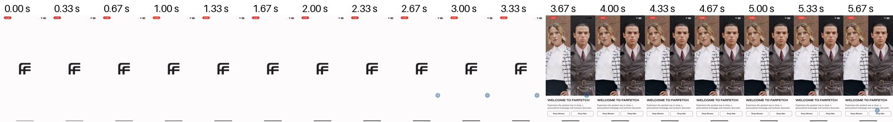
Ventana 0–6 s. Fotogramas muestreados de una grabación de terceros; no medición de rendimiento.grabación de app comercial · #02 #13 #20
farfetch-agregar-bolsa
Tras «Add To Bag» en la hoja de talla: la hoja baja, el fondo se oscurece con un icono de bolsa y un anillo de progreso centrados durante ≈3 s (227,8–230,9 s) y sube la hoja «Added to Bag» con producto, talla, precio y «Go to bag» (231,6–231,8 s). El icono no sale del botón ni viaja: la descripción de ScreensDesign («morphing into a bag icon that travels towards the top») no coincide con la grabación. El mismo patrón se repite en 335–339 s.
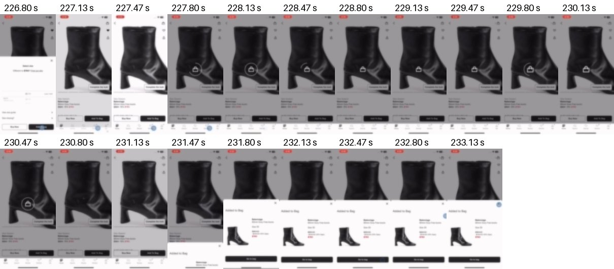
Ventana 226.8–233.6 s. Fotogramas muestreados de una grabación de terceros; no medición de rendimiento.grabación de app comercial · #20
farfetch-icono-central
Cuadro a cuadro: el icono se encoge en su sitio (230,7–231,0 s); el oscurecido se retira y vuelve con la hoja de confirmación (231,5–231,9 s). No hay desplazamiento hacia la bolsa.
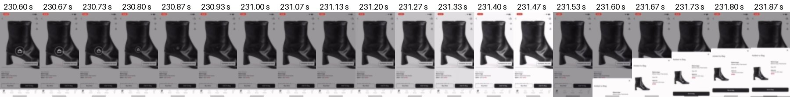
Ventana 230.6–231.9 s. Fotogramas muestreados de una grabación de terceros; no medición de rendimiento.grabación de app comercial · #03 #08 #13
farfetch-filtro-color
Al tocar un color, la fila queda con borde y la pantalla se oscurece con un indicador central ≈1 s mientras se recalcula «Show N Results». No hay animación de check.
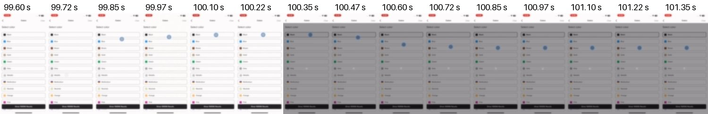
Ventana 99.6–101.4 s. Fotogramas muestreados de una grabación de terceros; no medición de rendimiento.grabación de app comercial · #10
farfetch-plegable
«Size & Fit»: el contenido se expande empujando lo de abajo en ≈0,2 s (246,27–246,47 s) y el chevron se invierte.
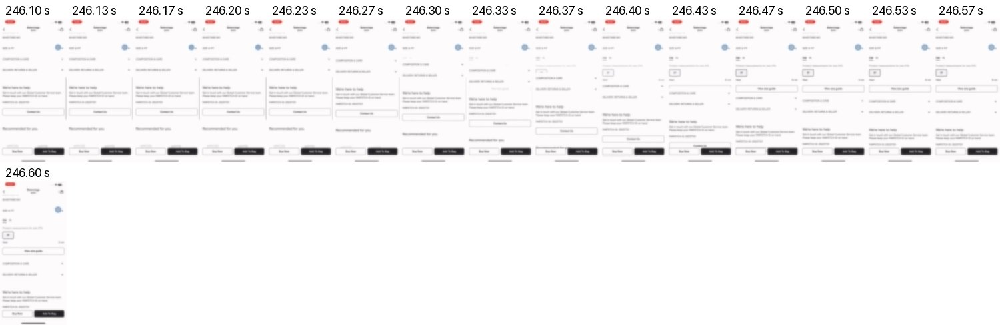
Ventana 246.1–246.6 s. Fotogramas muestreados de una grabación de terceros; no medición de rendimiento.grabación de app comercial · #04
farfetch-galeria
Al entrar a la ficha, la foto aparece con un fundido de ≈0,35 s (183,43–183,77 s); después la galería se desliza horizontalmente con un indicador de segmentos bajo la foto. Sin miniaturas.
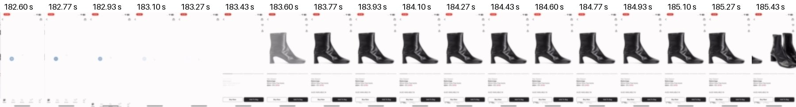
Ventana 182.6–185.6 s. Fotogramas muestreados de una grabación de terceros; no medición de rendimiento.grabación de app comercial · #06
farfetch-variante-color
Al tocar otro color en «Also available in» se abre otra ficha con esqueleto de carga (≈2 s); la foto no cambia en el sitio.
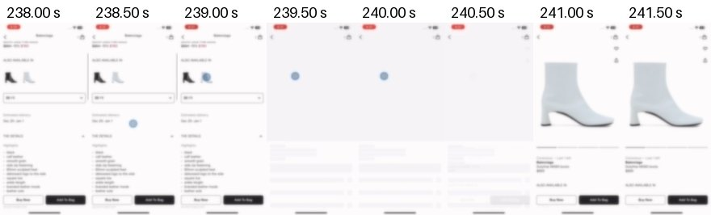
Ventana 238–242 s. Fotogramas muestreados de una grabación de terceros; no medición de rendimiento.grabación de app comercial · #17
farfetch-favorito-marca
El corazón de la marca se rellena sin cambio de escala visible; ≈0,5 s después aparece «Favorited» bajo el nombre.
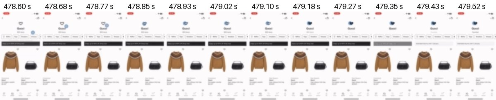
Ventana 478.6–479.6 s. Fotogramas muestreados de una grabación de terceros; no medición de rendimiento.grabación de app comercial · #17
farfetch-favorito-ficha
El indicador de toque de la grabación tapa el icono; el corazón aparece relleno a 193,9 s, ≈0,9 s después del toque, sin rebote visible.
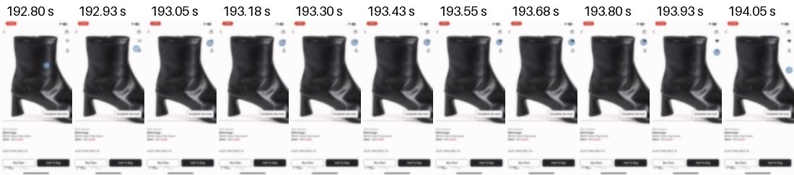
Ventana 192.8–194.1 s. Fotogramas muestreados de una grabación de terceros; no medición de rendimiento.grabación de app comercial · #12 #13
farfetch-quitar-bolsa
✕ en la fila: la fila se oscurece localmente ≈1,3 s, luego se retira y la lista se reacomoda; el contador pasa de 6 a 5. Sin deshacer.
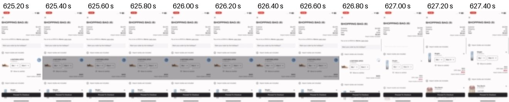
Ventana 625.2–627.6 s. Fotogramas muestreados de una grabación de terceros; no medición de rendimiento.grabación de app comercial · #12
farfetch-quitar-deseos
✕ en la lista de deseos: el contador pasa de 12 a 11 y la tarjeta siguiente ocupa el hueco en ≈0,2 s. Sin deshacer.
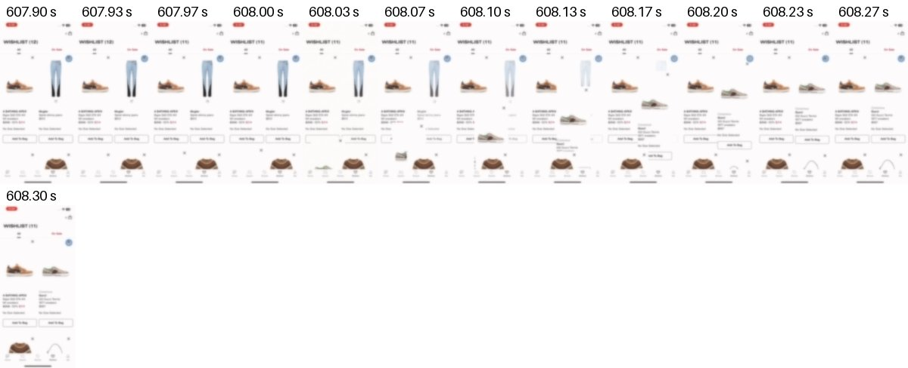
Ventana 607.9–608.3 s. Fotogramas muestreados de una grabación de terceros; no medición de rendimiento.grabación de app comercial · #15
farfetch-copiar-codigo
Código de recompensa: el texto se desvanece y aparece «Code Copied» en el mismo botón (≈0,25 s, 676,6–676,8 s). Sin aviso flotante.
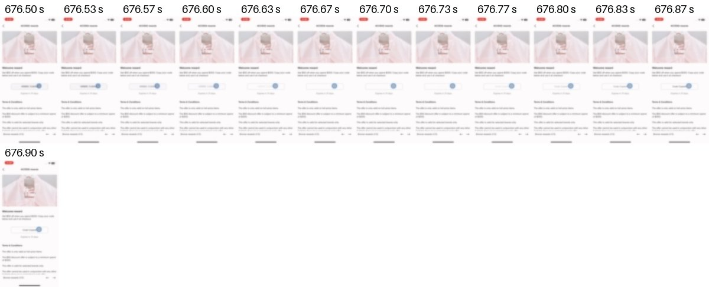
Ventana 676.5–676.9 s. Fotogramas muestreados de una grabación de terceros; no medición de rendimiento.grabación de app comercial · #11
farfetch-pestana-inicio
Al tocar Inicio vuelve arriba con esqueleto ≈0,8 s y fundido de imágenes. La barra inferior no tiene un indicador que se desplace.
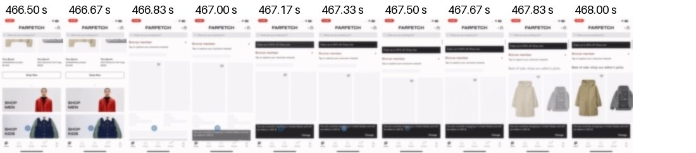
Ventana 466.5–468.2 s. Fotogramas muestreados de una grabación de terceros; no medición de rendimiento.grabación de app comercial · #09
moda-operandi-arranque
Logotipo de texto estático sobre fondo lila durante los 8 s de carga.
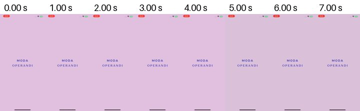
Ventana 0–8 s. Fotogramas muestreados de una grabación de terceros; no medición de rendimiento.grabación de app comercial · #13
moda-operandi-carga-marca
Indicador de carga con las cuatro formas geométricas del logo, que cambian de color mientras carga «Shop».
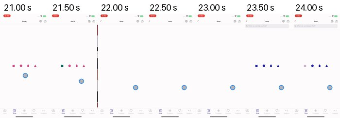
Ventana 21–24.5 s. Fotogramas muestreados de una grabación de terceros; no medición de rendimiento.grabación de app comercial · #01 #13
moda-operandi-agregar
Tras elegir talla, «Add to Bag» muestra tres puntos dentro del botón ≈0,8 s; luego baja una franja verde superior («This item has been added to your bag») que persiste varios segundos.
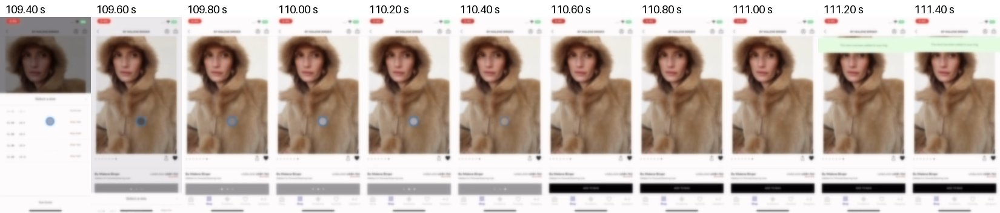
Ventana 109.4–111.6 s. Fotogramas muestreados de una grabación de terceros; no medición de rendimiento.grabación de app comercial · #14
moda-operandi-error-stock
En la bolsa, mensaje rosa persistente junto a la fila del producto que pide una cantidad menor; sin sacudidas.
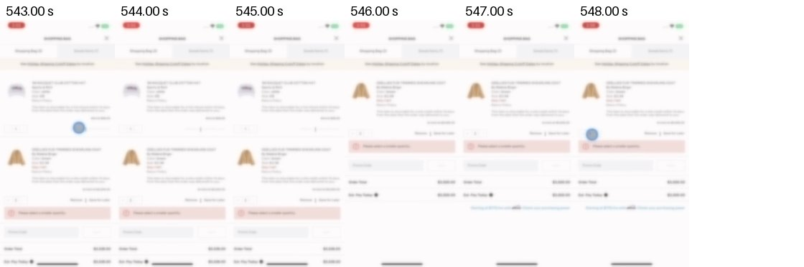
Ventana 543–549 s. Fotogramas muestreados de una grabación de terceros; no medición de rendimiento.grabación de app comercial · #09
zara-arranque
Logotipo estático de 0 a 7 s y corte a la bienvenida negra con «ENTER».
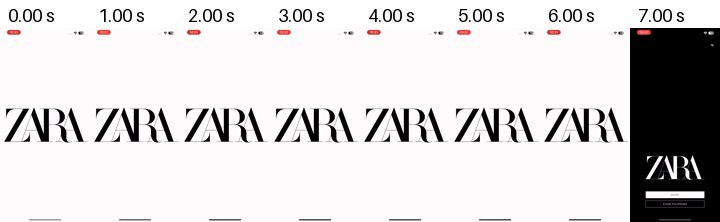
Ventana 0–8 s. Fotogramas muestreados de una grabación de terceros; no medición de rendimiento.grabación de app comercial · #02
zara-agregar-rapido
«+» en el listado abre la hoja de tallas; al elegir, sube un panel de confirmación con miniatura y sugerencias.
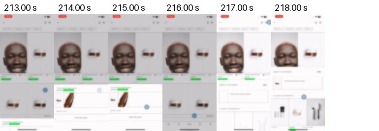
Ventana 213–219 s. Fotogramas muestreados de una grabación de terceros; no medición de rendimiento.grabación de app comercial · #12 #19
zara-borrar-deshacer
Deslizar la fila revela «DELETE» en rojo; al tocarlo, la pantalla queda bloqueada con «Loading» ≈0,6 s, la fila se retira y aparece una barra negra inferior con el mensaje de eliminación y una acción a la derecha («UNDO», apenas legible a esta resolución). Cada fila tiene además una ✕ visible.
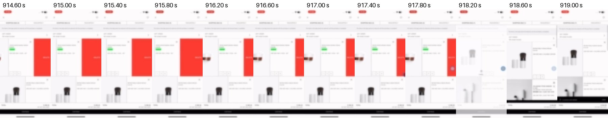
Ventana 914.6–919.4 s. Fotogramas muestreados de una grabación de terceros; no medición de rendimiento.grabación de app comercial · #09
hbx-arranque
Logotipo estático y corte al aviso de privacidad.
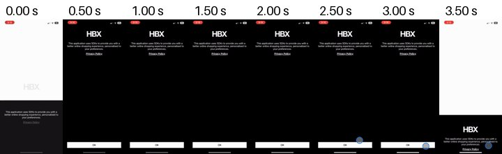
Ventana 0–4 s. Fotogramas muestreados de una grabación de terceros; no medición de rendimiento.grabación de app comercial · #01 #13
hbx-agregar
«Add to Bag»: indicador de carga dentro del botón ≈0,7 s; aparece una insignia en la pestaña Bolsa, el botón pasa a «Checkout» y baja una franja superior «✓ Item Added» con miniatura.
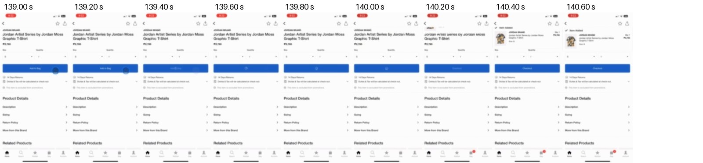
Ventana 139–140.8 s. Fotogramas muestreados de una grabación de terceros; no medición de rendimiento.grabación de app comercial · #14
hbx-error-stock
Tras cambiar la cantidad, franja roja superior de stock insuficiente que persiste; no aparece junto al control.
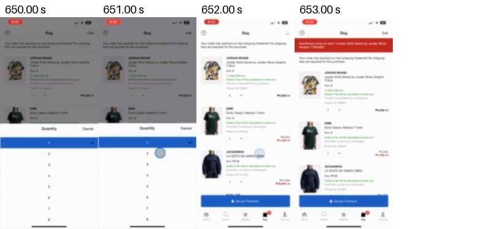
Ventana 650–654 s. Fotogramas muestreados de una grabación de terceros; no medición de rendimiento.grabación de app comercial · #18
lyst-bienvenida-reposo
Bienvenida en movimiento continuo sin interacción: el collage se desplaza y el lema rota cada ≈2 s durante al menos 15 s.
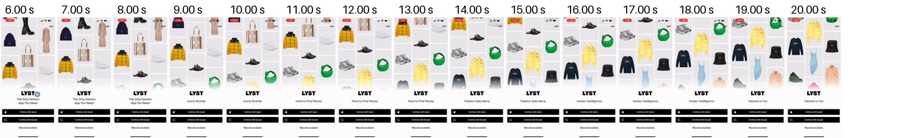
Ventana 6–21 s. Fotogramas muestreados de una grabación de terceros; no medición de rendimiento.grabación de app comercial · #09
asos-intro
Tras el logotipo estático: monograma «a» en círculo, zoom que llena la pantalla (≈0,5 s), disolución en bloques (≈1 s) y once logos de submarcas en cortes de ≈0,4 s, con un indicador de carga bajo cada uno. ≈5,6 s en total.
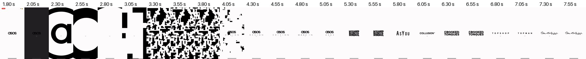
Ventana 1.8–7.7 s. Fotogramas muestreados de una grabación de terceros; no medición de rendimiento.grabación de app comercial · #13
asos-carga-marca
El monograma «a» gira como indicador de carga entre pantallas.
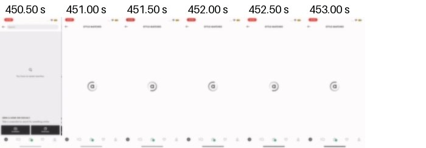
Ventana 450.5–453.5 s. Fotogramas muestreados de una grabación de terceros; no medición de rendimiento.grabación de app comercial · #09
zalando-arranque
El logo estático se difumina en un resplandor con indicador de carga (≈0,35 s) antes del selector de país.
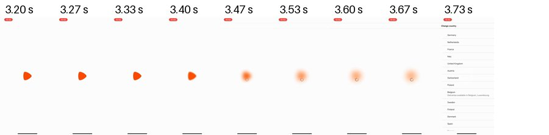
Ventana 3.2–3.8 s. Fotogramas muestreados de una grabación de terceros; no medición de rendimiento.grabación de app comercial · #17
zalando-corazon
Recorte de la zona del corazón. Al soltar, se rellena de naranja, crece por encima de su tamaño y vuelve (≈0,3 s, 314,77–315,07 s); ≈0,8 s después sube una hoja de confirmación con artículos combinables.
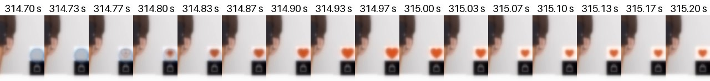
Ventana 314.7–315.2 s. Fotogramas muestreados de una grabación de terceros; no medición de rendimiento.grabación de app comercial · #02 #17
zalando-hoja-deseos
El corazón aparece relleno a 315,27 s y a 315,93 s sube una hoja inferior «agregado a la lista de deseos» con «Matching items · Make it a set».
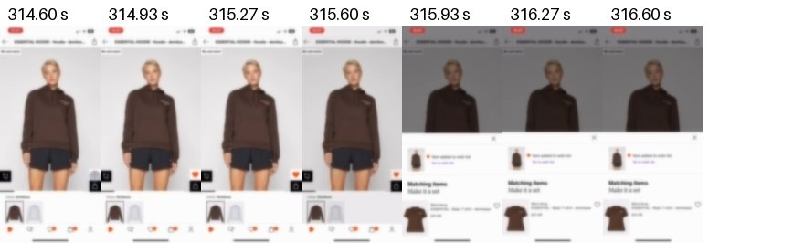
Ventana 314.6–317 s. Fotogramas muestreados de una grabación de terceros; no medición de rendimiento.grabación de app comercial · #09
shop-intro
El splash se funde a blanco (≈0,25 s); un trazo dibuja la «o» del logotipo (2,50–2,83 s), se encoge y estalla en el logotipo «shop» rodeado de productos (3,03–3,10 s). «Get Started» es visible desde 2,63–2,70 s, antes de terminar. ≈1,2 s.
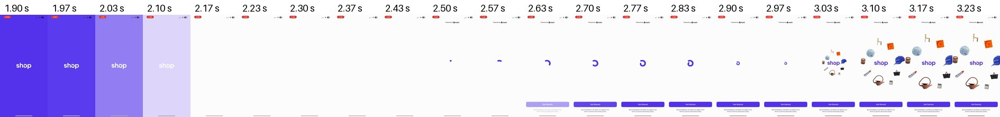
Ventana 1.9–3.3 s. Fotogramas muestreados de una grabación de terceros; no medición de rendimiento.grabación de app comercial · #18
shop-bienvenida-reposo
Sin interacción, los productos se reacomodan y el lema rota cada ≈2 s.
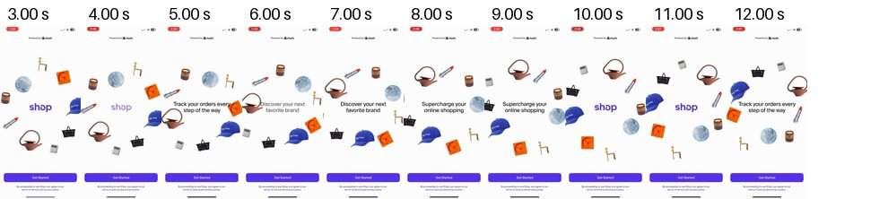
Ventana 3–13 s. Fotogramas muestreados de una grabación de terceros; no medición de rendimiento.Fuentes excluidas y límites
Christopher Ward: los clips muestran emails/CRM, no interacciones de app. Paul Smith 1181178813: montaje de pantallas, no prueba de navegación. NET-A-PORTER: descripción histórica consultada, película no verificada visualmente. Se descartaron también previews sin correspondencia exacta o sin movimiento visible suficiente.
Las fuentes y videos pertenecen a sus autores. Estas hojas de fotogramas son extractos de análisis con atribución y enlaces. No son activos para incorporar a Monetta.